On this website I want to talk about the F22 Raptor
The Lockheed Martin/Boeing F-22 Raptor is an American twin-engine, all-weather, supersonic stealth fighter aircraft.
As a product of the United States Air Force's Advanced Tactical Fighter (ATF) program, the aircraft was designed as an air superiority fighter,
but also incorporates ground attack, electronic warfare, and signals intelligence capabilities. The prime contractor, Lockheed Martin,
built most of the F-22 airframe and weapons systems and conducted final assembly,
while program partner Boeing provided the wings, aft fuselage, avionics integration, and training systems.

 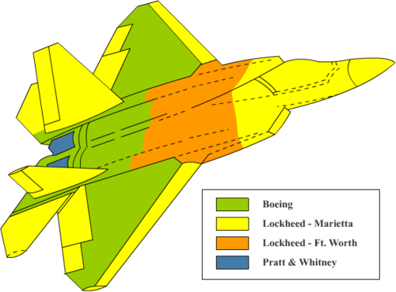
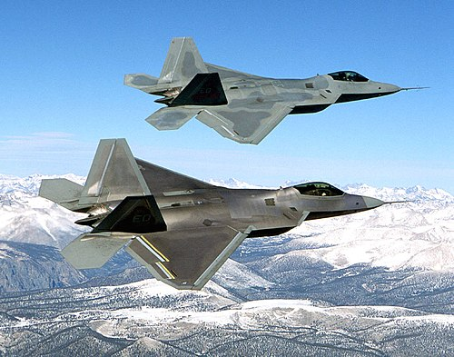
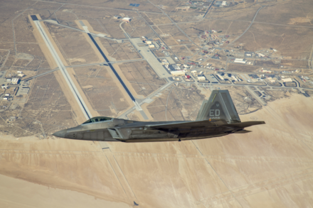
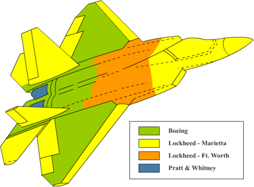
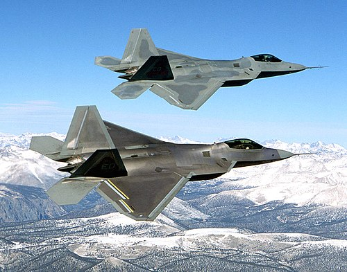
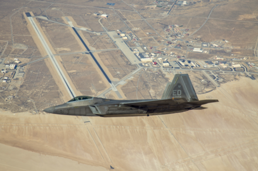
The F-22 is a critical component of the USAF's high-end tactical airpower. While it had a protracted development and initial operational difficulties, the aircraft became the service's leading counter-air
platform against peer adversaries.
Although designed for air superiority operations, the F-22 has also performed strike and electronic surveillance, including missions in the Middle East against the Islamic State and Assad-aligned forces.
The F-22 is expected to remain a cornerstone of the USAF's fighter fleet until its succession by the Boeing F-47.
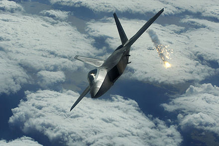
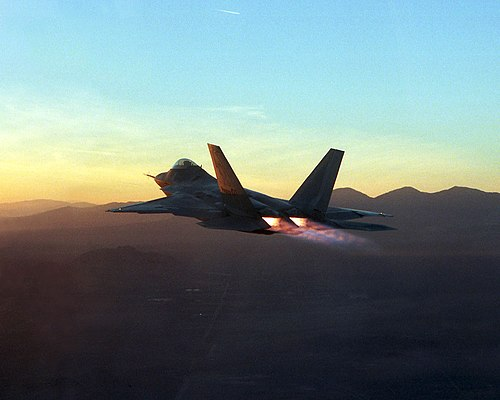
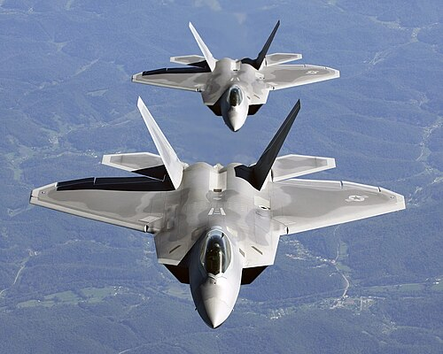
The F-22 flight test program consisted of flight sciences, developmental test (DT), and initial operational test and evaluation (IOT&E) by the 411th Flight Test Squadron (FLTS) at Edwards AFB, California, as well as follow-on OT&E and development of tactics and operational employment by the 422nd Test and Evaluation Squadron (TES) at Nellis AFB, Nevada. Nine EMD jets assigned to the 411th FLTS would participate in the test program under the Combined Test Force (CTF) at Edwards. The first two aircraft conducted envelope expansion testing, such as flying qualities, air vehicle performance, propulsion, and stores separation. The third aircraft, the first to have production-level internal structure, tested flight loads, flutter, and stores separation, while two non-flying F-22s were built for testing static loads and fatigue. Subsequent EMD aircraft and the Boeing 757 FTB tested avionics, environmental qualifications, and observables, with the first combat-capable Block 3.0 software flying in 2001. Air vehicle testing resulted in several structural design modifications and retrofits for earlier lots, including tail fin strengthening to resolve buffeting in certain conditions. Raptor 4001 was retired from flight testing in 2000 and subsequently sent to Wright-Patterson AFB for survivability testing, including live fire testing and battle damage repair training. Other retired EMD F-22s have been used as maintenance trainers.
Here I have a couple of pictures of the F22 for anyone intersted in it.


 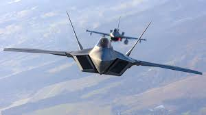
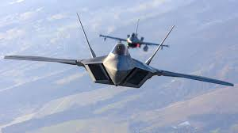